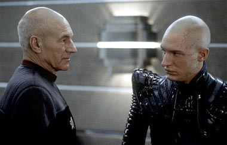
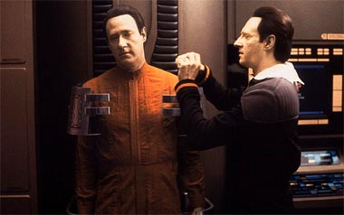
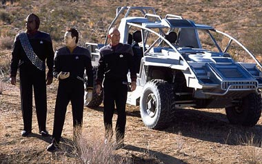
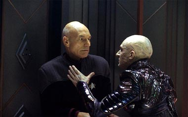
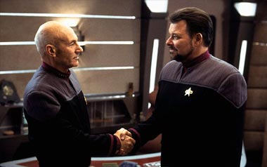

|

Publicado como artigo de
Especiais em janeiro de 2003


|
"Nmesis" pode no ser o melhor filme da franquia, nem sequer o melhor de
A Nova Gerao. Mas, logo de cara, passou por uma prova de fogo: foi um filme que consegui apreciar, mesmo tendo sido submetido a uma sesso para a imprensa numa sala de cinema bem modesta, s dez e meia da manh. Confesso ao leitor -- no qualquer filme de que consigo gostar a essa hora da madrugada.  Se fcil entender no que Shinzon se transformou depois de descobrir que era um mero instrumento num plano ardiloso dos Romulanos, uma cpia gentica de outro homem, depois de viver por anos e anos oprimido nas minas de Remus, o abalo de Picard parece ser muito menos justificvel. Uma das crticas que o filme sofreu da supostamente inexplicvel motivao de Shinzon para destruir a Terra -- tudo para criar um perigo com o qual a audincia humana realmente devesse se preocupar. Mas, de todas as crticas, essa a que menos procede. Claramente, Shinzon nunca esteve preocupado em destruir a Federao. Seu objetivo, propelido pela forma artificial e traumtica com que ele veio a existir, era simplesmente magoar Picard -- apagar a "fonte original" de si mesmo, tornando-se senhor de seu prprio destino. Da a vontade de destruir o capito e, mais alm, destruir a Terra. Com isso, ele no s conseguiria rejeitar sua origem -- humana, apesar de tudo --, mas tambm colocar na histria o nome de Shinzon de Remus, o homem que destruiu o planeta Terra. Essa complexidade do personagem fascinante, mas exige um tipo de trabalho de direo que Stuart Baird certamente no estava qualificado para executar. Talvez por isso, mais do que por problemas no roteiro de John Logan, a premissa acabe apresentando mais potencial do que resoluo ao longo do filme. Na outra ponta dessa discusso, temos Data e B-4: Brent Spiner em dose dupla. O ator, que pela primeira vez se envolveu diretamente na concepo da histria, conseguiu imprimir grande emoo e sensibilidade na interpretao de B-4, o irmo "retardado" de Data. As cenas entre os dois andrides, 100% interpretadas por Spiner, funcionam muito bem, e detalhes sutis na maquiagem dos dois personagens ajudam a criar esse efeito de duas entidades com o mesmo rosto, mas ligeiramente diferentes (preste ateno ao filme: B-4 tem o nariz mais arredondado que Data, assim como olhos mais destacados, o que talvez signifique o mais incrvel trabalho de maquiagem de toda a pelcula, pela sutileza com que foi executado).  Diferentemente do que sugere a histria de Picard e Shinzon, as cenas entre Data e B-4 parecem sugerir que h um limite para o que o ambiente e a criao podem fazer por um indivduo -- a natureza de cada um, em ltima anlise, o que importa. Com Picard/Shinzon, vemos o quanto "nurture" pode ser fundamental para um indivduo; com Data/B-4, vemos o quanto "nature" pode ser igualmente importante. Em outras palavras, a soma dos elementos no fornece uma resposta fcil discusso -- o que extremamente positivo, embora frustrante para uma audincia ansiosa por mensagens cristalinas e de simples assimilao. O que nos leva ao cerne da questo: "Nmesis" aposta em temas muito profundos, mas isso que um filme de Jornada nas Estrelas deve fazer? As nove lies anteriores respondem a essa pergunta com um sonoro "No!". As tentativas prvias de apostar em filosofia como combustvel no cinema foram "O Filme", "A ltima Fronteira" e "Insurreio". No primeiro, o debate a singularidade e o valor da natureza humana e sua capacidade de transcender seus limites. No quinto, a idia (originalmente ao menos) discutir de onde vem a nossa inspirao para concepes como "Deus". No nono, o debate gira em torno de quo flexveis ou inflexveis devemos ser com relao a nossos prprios princpios. E todos os trs, em maior ou menor grau, foram desapontamentos em termos de narrativa. Isso porque o mais importante num filme a capacidade de a audincia se conectar com os personagens. Por isso, a tenso do enredo precisa se concentrar nos personagens, no numa polmica filosfica alheia a eles. Por isso "Primeiro Contato", que nos permite um elo to forte e pessoal com Picard, funciona to bem. uma histria relativamente simples, bem contada e que propele as mais fortes emoes por parte dos personagens. "Nmesis" tenta fazer isso, mas falha com seu protagonista: Picard no consegue realmente criar essa conexo com a audincia desta vez. Os produtores claramente sabiam que s o fascnio pela filosofia no iria fazer deste filme um sucesso. Por isso apostaram na tentativa de torn-lo um segmento voltado para o pblico de ao/aventura tanto quanto possvel. Certos elementos do roteiro foram concebidos exatamente com esse objetivo, e a contratao de Stuart Baird como diretor tambm refletiu essa preocupao. E o resultado final acabou rendendo alguns dividendos. O filme comea com uma abertura espetacular, em que vemos o Senado Romulano ser (literalmente) dissolvido, o que, descobriramos depois, levaria Shinzon ao poder em Romulus. Na sequncia, temos a cerimnia do casamento de Troi e Riker, no Alaska. A transio cria um belo contraste entre a forte abertura e o clima de festividade da tripulao da Enterprise. As cenas funcionam como uma reunio de velhos amigos -- no s entre os tripulantes da Enterprise, mas tambm entre a audincia e seus personagens favoritos. Aps um comeo bem interessante, o filme entra numa espiral descendente. A caminho de Betazed, para a cerimnia Betazide do casamento dos dois, a Enterprise detecta uma emisso positrnica num planeta prximo Zona Neutra Romulana -- Kolaris III. Picard, Data e Worf descem para investigar o sinal. Para a surpresa de todos os familiarizados com Jornada nas Estrelas, o trio usa um jipe para se locomover pela superfcie.  Vale aqui fazer uma pausa e discutir a presena desse veculo sobre rodas da Federao, o Argo. Claramente, ningum esperaria a existncia dessa mquina. Por simples racionalizao, vale dizer que faria todo o sentido do mundo usar veculos sobre rodas, mesmo no sculo 24 (algumas coisas realmente no podem melhorar muito mais, no importa quantos anos se passem). Mas acontece que o universo fictcio de Jornada j estabeleceu que carros no so equipamento-padro. Picard j teve 'n' oportunidades durante a srie de usar um veculo desses, e nunca o fez -- o uso do carro aqui parece to falso quanto uma nota de trs reais. Alm disso, preciso ressaltar que a sequncia chata mesmo. Worf se assustando com um brao andride agarrado sua perna pattico, e ver o trio indo de um ponto a outro recolhendo pedaos de andride no mnimo tedioso. Voc no v a hora de eles voltarem Enterprise, o que acontece aps uma perseguio de carros previsvel e desinteressante. Neste ponto, eu realmente comecei a me preocupar com o futuro do filme. De volta Enterprise, um chamado do Comando da Frota Estelar: a almirante Janeway instrui Picard a ir a Romulus. Aparentemente o novo Praetor, Shinzon, quer discutir um acordo de paz com a Federao. Janeway revela que o lder um Reman, a civilizao "irm" dos Romulanos que sempre foi usada como "bucha de canho" pelo Imprio. Picard ordena a marcao do curso e informa seus oficiais da misso. Ao entrar em rbita de Romulus, a Enterprise espera por vrias horas, at ser contatada por uma nave gigantesca -- a Scimitar, nau-capitnea das foras de Shinzon. O Vice-Rei, Reman que serve como mentor intelectual do novo Praetor, transmite coordenadas para que Picard v ao Senado Romulano conversar com Shinzon. Um grupo avanado se apresenta, apenas para descobrir que Shinzon humano -- mais que isso, um clone de Picard. Mais tarde, num jantar, os dois se conhecem melhor e o capito da Enterprise descobre como esse mistrio foi concebido. Numa bela sequncia, Shinzon nos oferece um flashback de sua vida pregressa em Remus, a ajuda que recebeu do Reman que hoje seu Vice-Rei e de seus planos -- para estabelecer a paz e a justia para os Remans, segundo ele. A apresentao de Shinzon no muito efetiva e o filme continua num ritmo arrastado. As coisas s comeam a melhorar depois que Picard raptado por Shinzon, que precisa de doaes de tecidos do capito para poder sobreviver -- aparentemente o clone est passando por srios problemas de sade causados pela tentativa de fazer com que ele envelhecesse em ritmo acelerado para eventualmente substituir Picard (esse era o plano original dos Romulanos). A natureza malvola do Praetor revelada tripulao da Enterprise (embora desde o pster do filme todos ns j soubssemos disso, o que ajuda a tornar esse trecho tambm arrastado, apesar das boas atuaes de Tom Hardy e Patrick Stewart) e a natureza cinematogrfica de Baird cresce com isso. Descobrimos que B-4 foi mesmo criado pelo dr. Noonien Soong, o "pai" de Data, mas foi usado por Shinzon como forma de atrair a Enterprise para perto das fronteiras Romulanas (o que resolve de forma brilhante o problema de a Enterprise ser convenientemente "a nave mais prxima do local", um dos clichs menos convincentes e mais utilizados em Jornada nas Estrelas). B-4 foi manipulado e est a servio dos Romulanos, mas Data e Geordi descobrem isso em tempo e conseguem substituir um andride pelo outro, o que logo garante uma vantagem estratgica, quando Picard sequestrado. Fingindo ser B-4, Data liberta o capito e os dois logo tratam de encontrar um modo de fugir da Scimitar. E a o filme comea a recuperar o flego e entrar num ritmo digno dos fs de ao e aventura. A fuga dos dois a bordo de uma nave Scorpion, voando com ela pelos prprios corredores da Scimitar, pode no ser l muito verossmil. Mas emocionante e extremamente bem-executada. De volta Enterprise, o objetivo agora reagrupar com uma esquadra de naves da Frota e impedir a todo custo que a Scimitar -- totalmente camuflada e indetectvel -- atinja a Terra. Equipada com uma arma base de Thalaron, que, segundo Geordi, poderia destruir toda a vida em escala planetria, a Scimitar faria muitos estragos se atingisse o corao da Federao. Picard declara que todo e qualquer esforo dever ser feito para impedir que Shinzon chegue Terra. Em contrapartida, Shinzon precisa recapturar Picard, se pretende sobreviver. A Scimitar ataca a Enterprise, que recebe a ajuda inesperada de naves Romulanas que se rebelaram contra a poltica genocida de Shinzon. A sequncia de batalha espacial a mais empolgante desde o confronto de Kirk e Khan na nebulosa Mutara, em "A Ira de Khan". A ponte da Enterprise fatalmente avariada, vrios tripulantes so cuspidos para o espao, os Remans invadem a nave, so repelidos pelos federados, Riker tem um confronto mortal com o Vice-Rei (talvez a parte mais fraca deste ponto do filme) e a Enterprise consegue, graas ao bom uso de Troi na deteco da posio da Scimitar (provavelmente o melhor uso das habilidades telepticas da conselheira j visto em toda a histria da Nova Gerao), atacar a nave de Shinzon. Incapaz de danific-la seriamente e com a batalha quase perdida, Picard marca um curso de coliso com a Scimitar. A essa altura, eu j estava sentado na ponta da cadeira, prestes a desabar. Mas no tudo. Aps o violento choque, a Enterprise est semi-destruda, mas a Scimitar tambm no est bem. Shinzon se prepara para usar a arma de Thalaron contra a nave de Picard. A sequncia de disparo levaria sete minutos -- o tempo que o capito tem para ir at l e desativ-la. Ele parte via teletransporte, mas o sistema sobrecarregado na sequncia. No h como ele voltar Enterprise. Data decide ir ao resgate do capito. Ele simplesmente salta para o espao e se agarra Scimitar. Enquanto isso, Picard est num confronto mortal com Shinzon. O Praetor, muito debilitado por sua condio mdica, acaba sendo morto pelas mos de Picard. O impacto emocional dessa morte a nica coisa que realmente soa genuna e na medida certa, na relao entre os dois humanos. Jean-Luc est desolado e incapaz de tomar alguma atitude.  Data chega, providencia o teletransporte do capito com um sistema de emergncia para um (apresentado previamente quando pela primeira vez o andride resgata Picard das mos de Shinzon) e destri a arma de Thalaron, causando a exploso da Scimitar e de si mesmo. O impacto da morte de Data no to gritante e emocional como o da de Spock em "A Ira de Khan", embora esteja vrios anos-luz adiante da perda ftil de Kirk em "Generations". E o momento acaba sendo bem efetivo para estabelecer a perda de um dos personagens mais queridos do universo de Jornada nas Estrelas. O filme termina em um tom bastante tocante, aps a frentica ao que conduziu ao clmax, com os tripulantes rememorando e homenageando Data e Riker se despedindo de seu capito. No frigir dos ovos, um bom final para A Nova Gerao. A tripulao se dispersa, Riker ganha vida prpria com Troi numa outra nave, e Data perdido para sempre. No fosse pela lembrana final de B-4 da msica que Data cantou no incio do filme, "Blue Skies", o filme realmente pareceria uma despedida ainda mais definitiva. Ainda assim, a referncia pareceu muito mais uma emocionante lembrana do oficial perdido do que uma sugesto de que nosso andride favorito ainda estaria "vivo" de alguma forma. Os valores de produo so simplesmente espetaculares. O trabalho de efeitos especiais seguramente o mais intenso e convincente de todos os filmes de Jornada nas Estrelas e a trilha de Jerry Goldsmith, ao contrrio do que dizem, carrega muito bem o filme, imprimindo um clima pesado e marcial ao conflito (tanto psicolgico quanto literal) proposto pelo roteiro. O humor tambm aparece, especialmente nas primeiras cenas dos tripulantes da Enterprise, e leve e menos exagerado que o de "Insurreio" (embora Worf continue sendo o alvo favorito de piadas pouco enobrecedoras). E a tenso , obviamente, a tnica da pelcula. H uma bela combinao de elementos e, fora a seqncia de Kolaris III (talvez a nica "gordura" do filme, ainda que essencial ao desenrolar da trama), "Nmesis" sabe como agradar ao pblico em geral. Ainda assim, sempre h problemas com um filme que aspira mais do que poderia ou deveria. Patrick Stewart comentou diversas vezes o quanto lhe agradou a profundidade do tema. A questo nunca foi o quo interessante a premissa era; a verdadeira pergunta que os produtores precisavam responder de cara era, "O quo profunda essa premissa realmente deveria ser?". Talvez a falta dessa resposta ecoe um pouco sobre o conjunto de "Nmesis". Apesar disso, A Nova Gerao deixa as telas com sua dignidade intacta e com a certeza do dever cumprido.  |